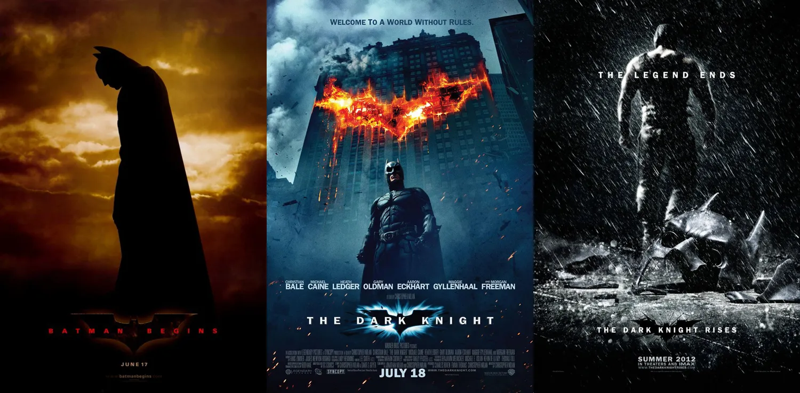

Christopher Nolan
Un réalisateur de génie et ses marques iconiques
Photo du réalisateur
Ses succès
Christopher Nolan est né le 30 juillet 1970 à Westminster (Londres), il est un réalisateur, scénariste, producteur et monteur anglo-américain. Tous ses films ont rapporté plus de 5 milliards de dollars dans le monde. Mais Christopher Nolan ne se démarque pas seulement par ses chiffres. Son travail a été maintes fois salué par la critique. Ayant remporté pas moins de 11 Oscars sur un total de 36 nominations, on constate que ses confrères reconnaissent son talent hors du commun. Cette liste impressionnante comprend des catégories majeures telles que le meilleur film et le meilleur scénario original. Ces prix reflètent sa capacité à raconter des histoires captivantes et innovantes.
Affiches des trilogies “The Dark Knight
La trilogie "The Dark Knight" (2005-2012) est un exemple frappant de son succès critique et commercial. Cette série de films sur le super-héros Batman a conquis à la fois les fans de bandes dessinées et les cinéphiles exigeants. Elle a remporté un total de 8 nominations aux Oscars, établissant de nouvelles normes pour les films de super-héros et montrant que le genre peut être à la fois populaire et artistiquement ambitieux.

Photo du réalisateur en plein tournage
Un héritage certain
"Oppenheimer" promet d'explorer une fois de plus des questions éthiques profondes à travers l'histoire du père de la bombe atomique, J. Robert Oppenheimer. Cette nouvelle réalisation souligne l'engagement continu de Nolan à raconter des histoires complexes et à provoquer la réflexion du public. Le travail de Christopher Nolan est un héritage cinématographique qui continuera à influencer la manière dont nous percevons le cinéma et la narration. Son style unique et sa capacité à captiver les publics font de lui une véritable icône du cinéma contemporain. Ses films laissent une empreinte durable, invitant les spectateurs à plonger dans des mondes cinématographiques fascinants et à explorer des thèmes complexes.
Autres films
Affiche Tenet
Affiche Dunkerque
Affiche Interstellar
Affiche Batman Rises
Affiche Interstellar
Affiche Batman Le Chevalier Noir
Affiche Le Prestige
Affiche Batman Beggins
Affiche Insomnia
Affiche Memento